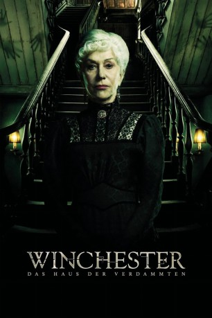

#9418 Winchester: Das Haus der Verdammten
 
 IMDB-Wertung: 5.4 / 10
IMDB-Wertung: 5.4 / 10  Metascore: 28
Metascore: 28 
Auf einem abgelegenen Grundstück außerhalb San Franciscos steht das gigantische Anwesen der Winchester-Familie, mit sieben Stockwerken und mehreren hundert Räumen pro Etage. An dem Haus, das bereits seit mehreren Dekaden in Konstruktion ist, wird immer noch gebaut. Angelegt ist es als riesiges Labyrinth – mit Türen, hinter denen Wände sind und einer Treppe, die in der Decke endet. Bauherrin Sarah Winchester (Helen Mirren), die Witwe des berühmten Waffenherstellers William Winchester, will sich auf diese Weise die Geister vom Leib halten, von denen sie sich verfolgt fühlt. Seit dem Tod ihres Mannes und ihres Kindes glaubt sie, dass die gequälten Seelen derjenigen, die durch die Waffen des berühmten Unternehmens zu Tode gekommen sind, Rache an der Familie nehmen wollen.
Jahr: 2018
Dauer: 99 Minuten
FSK: 16
Land: Australien Studio: Splendid FilmTonspuren: DTS - ,
Untertitel: Deutsch,
Auflösung: 1080p (1920x808) Größe: 3921 MB
Genre: Thriller, Horror, Fantasy, Mystery, Biographie
Regisseur: Michael Spierig, Peter Spierig
Drehbuch: Tom Vaughan, Michael Spierig, Peter Spierig
Soundtrack: Peter Spierig
Darsteller:
 Helen Mirren als Sarah Winchester
Helen Mirren als Sarah Winchester Sarah Snook als Marion Marriott
Sarah Snook als Marion Marriott Jason Clarke als Dr. Eric Price
Jason Clarke als Dr. Eric Price- Emm Wiseman als Nancy
- Rebecca Makar als Partially Dressed Lady #2
- Tyler Coppin als Arthur Gates
 Angus Sampson als John Hansen
Angus Sampson als John Hansen- Alice Chaston als Clara
 Eamon Farren als Ben Block
Eamon Farren als Ben Block- Laura Brent als Ruby Price
- Adam Bowes als Farmer Amputee
 Bruce Spence als Augustine
Bruce Spence als Augustine- Curtis Bock als Harry Block
- Hayden Stewart als Innocent Man #2
- Chris Anderson als Innocent Man #3
- Laura Sutton als Innocent Woman
- Robert Shook als Police Officer #1
- Matthew Cohen als Ghostly Voices (uncredited)
- Jeffrey W. Jenkins als Footman (uncredited)
- Dawayne Jordan als Butler / Carpenter (uncredited)
- Jeff Lipary als Carpenter (uncredited)
- Homero Lopez als Carpenter (uncredited)
- A. Marshal Ward als Jack (uncredited)
- Finn Scicluna-O'Prey als Henry Marriott
- Alana Fagan als Partially Dressed Lady #1
- Michael Carman als Frank
- Phoenix Suhrou-Dimarco als Native American Child
- Jayden Irving als Carpenter #1
- Rosco Campbell als Carpenter #2
- Puven Pather als Carpenter #3
- Tom Heath als Wiry Carpenter
- Andy de Lore als James Block
- Graham Jahne als Innocent Man #1
- Richard Anastasios als Police Officer #2
- Will Jones als Police Officer #3
- Luke Maizey als Police Officer #4
- James Baldwin als Police Officer #5
- Neil Solomano als Police Officer #6
- Amos Ciza als Slave Ghost
- Red Horse Rivera als Chief Little Fawn
- Timothy Brown als Ghost #1
- Kym Lannin als Ghost #2 - Farmer
- Christian Rhodes-Wolfe als Ghost #3 - Union Soldier
- Albert Trajstman als Ghost #4 - Sheriff
- Xavier Gouault als Ghost #5 - Police Officer
- Gawi Deng als Ghost #6 - Confederate Soldier
- Ryuhei Tsukamoto als Ghost #7 - Rail Worker
- Shane Holloway als Ghost #8 - Cowboy
- Michael Boyd als Ghost #9 - Sheriff
- Elisa Abascal als Ghost #10 - Mexican Woman
Datei: X:\2018(N-Z)\Winchester Das Haus der Verdammten (2018, FSK16, 1920x808).mkv seit 30.08.2018
Festplatte: HD 2018(G-Z)-2019(A-Z)
 Es gibt insgesamt 172 Filme in der Gruppe '2018(N-Z)'
Es gibt insgesamt 172 Filme in der Gruppe '2018(N-Z)'